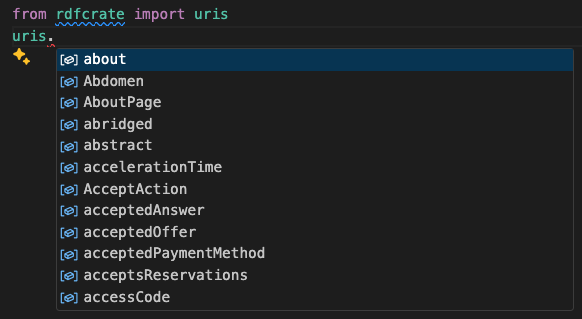

Guide
Thinking in Triples
When using rdfcrate, remember that every property is a triple of:
- Subject: the thing being described
- Predicate: the relationship between the subject and the object
- Object: the value or target of the relationship
If you’re used to JSON-LD, it’s good to understand that:
- JSON-LD objects are just triples that all share the same subject
- The
@typefield is just a specifictypepredicate - You don’t have to worry about
@contextat all. Hooray!
You can see this demonstrated when we convert from a JSON-LD entity into triples:
from rdflib import Graph
import pandas as pd
json_ld = """
{
"@context": "https://w3id.org/ro/crate/1.2-DRAFT/context",
"@id": "https://www.geonames.org/2152593/",
"@type": "Place",
"name": "Prahran"
}
"""
graph = Graph().parse(data=json_ld, format="json-ld")
print(pd.DataFrame(graph, columns=("subject", "predicate", "object")).to_markdown(index=False))
| subject | predicate | object |
|---|---|---|
| https://www.geonames.org/2152593/ | http://www.w3.org/1999/02/22-rdf-syntax-ns#type | http://schema.org/Place |
| https://www.geonames.org/2152593/ | http://schema.org/name | Prahran |
URIs
rdfcrate provides a library of useful IRIs/URIs that can be used as
predicates (field names), or types. The rdfcrate.uris module contains
all URIs that are part of RO-Crate by default, which can help you when
using autocomplete:

There are also BioSchemas specific IRIs in
the rdfcrate.bioschemas module.
rdflib Types
While JSON-LD uses context to understand what is an IRI and what is a
normal string, rdflib uses some special types to distinguish this.
Likely every attribute you pass to rdfcrate will be one of:
rdflib.URIReffor any identifier including types and properties. Everything insiderdfcrate.urisandrdfcrate.bioschemasis aURIRef.rdflib.Literalfor actual data like numbers and strings.rdflib.BNodewhich are IDs for blank nodes for entities that don’t really make sense as an individual objects.
Here’s an example that uses all three to describe an event schedule that repeats every 3 years:
from rdfcrate import AttachedCrate, uris
from rdflib import Literal, URIRef, BNode
crate = AttachedCrate(".")
every_three_years = crate.add_entity(BNode(), [uris.Schedule], [
(uris.repeatFrequency, Literal("P3Y")),
(uris.description, Literal("Repeats every 3 years")),
])
Associating Entities
RDF doesn’t really have a concept of nested entities. Instead, you
associate two entities using a triple of the form
(Entity A's IRI, Some Predicate, Entity B's IRI). In this example, we
link the unnamed every_three_years schedule with a specific event:
crate.add_entity(URIRef("https://www.ngv.vic.gov.au/triennial"), [uris.Event], [
(uris.name, Literal("NGV Triennial")),
(uris.eventSchedule, every_three_years),
])
Multiple Values
If you want to specify that a certain field has a list of values, you don’t use a list inside the tuple. Instead you repeat the same predicate multiple times. For example:
from rdfcrate import AttachedCrate, uris
from rdflib import Literal, URIRef
crate = AttachedCrate(".").add_entity(URIRef("#hook_turn"), [uris.HowTo], [
(uris.step, Literal("Indicate right from the left lane")),
(uris.step, Literal("Proceed into the intersection")),
(uris.step, Literal("Wait until lights on the road you are entering are green")),
(uris.step, Literal("Make a right turn")),
])